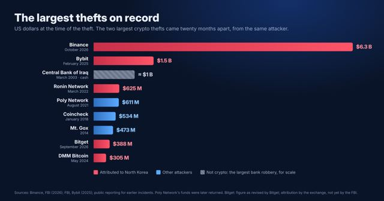
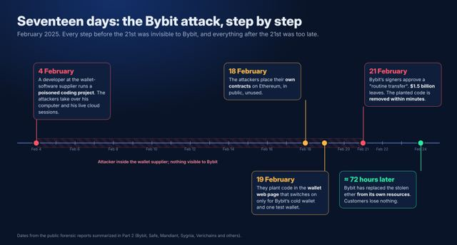
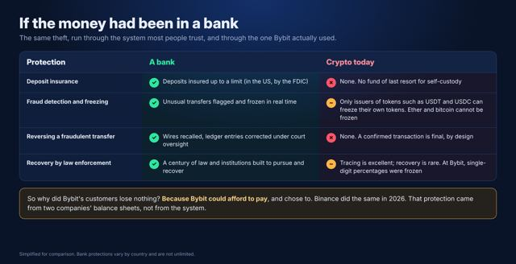
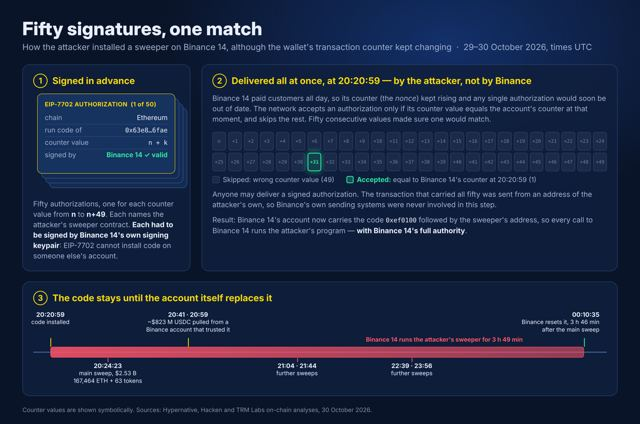

Blockchain2 + 1
A blockchain that runs the wallet for your other blockchains. Plus privacy.
In development · not yet available
One wallet. Three applications built on it.
The wallet is the base. The three applications are separate services that use it to sign. The wallet does not depend on any of them.
The wallet
Assets on Bitcoin, Ethereum, Solana and other chains, controlled by a private key that is never assembled anywhere. Every transaction is decoded on a blockchain and confirmed on a device in your hand. No seed phrase.
How the wallet works → ApplicationPayments
Stablecoin payments for commerce and for software agents, with the owner's limits enforced by the service and shown on the device.
The payment application → ApplicationPrivate balance
Payments between Counterseal accounts that are never published to a public chain, for assets from many chains, Bitcoin included.
The private balance → ApplicationWeaving
Subscribers' confirmed transactions are gathered unsigned on a blockchain and given the form that suits their next step: matched, combined, sent by a different route, and delivered privately. The savings return to their owners.
How weaving works →The powerful device is unsafe. The safe device cannot be made powerful.
A crypto wallet has had only two places to do its work, and each one fails.
Powerful, and the target of every attacker
It is the only device a user owns with enough computing power. It is also too complicated and too widely used to be safe.
Safe only while it stays simple
It exists because the phone and PC cannot be trusted with keys or with recovery. Every capability added to it makes it more complicated, which removes the reason it was adopted.
Three of the industry's largest problems follow directly from this.
Counterseal adds a third place. The heavy work runs on a blockchain, which is powerful, is not your phone, and is not a server any one company controls. The device stays simple. The phone is reduced to proposing.
The two largest exchange thefts on record did not break a blockchain.
They broke the ordinary computers around it: the web page the signers read, and the servers that decided what to sign.

The signers read one transaction and signed another.
Attackers changed the wallet's web page, which was stored with a cloud provider. The page showed a routine transfer. The hardware wallets showed the real transaction as raw data that nobody could read. Every signer followed procedure.
Read Part 1: The Locked Room →The exchange's own signing system signed the wallet away.
Nobody was deceived, because no person was asked. Attackers reached the system that signs for the exchange's automated wallets and had it produce fifty valid authorizations. The blockchain checked the signatures and obeyed.
Read Part 4: Fifty Signatures →These are not two accidents. This is where the losses are.
Figures from Chainalysis, Crypto Crime Reports covering 2024 and 2025. Over the same period, thefts from applications built on blockchains fell while the value held in them rose.
The common cause. In both cases the private keys were protected. The decision about what to sign was made by ordinary software on ordinary computers, and nothing independent checked that decision before the signature. A third theft, $387.5 million from Bitget in September 2026, followed the same pattern: forged commands reached the signing systems, and they signed.
These weaknesses are structural. A service reached through a browser on a phone or PC, supported by servers its operator runs, and approved on a device that cannot show what is being signed, has the same three openings every time. Better procedures narrow them. They do not close them: the Binance theft came twenty months after Bybit. Counterseal has none of the three. What remains is the correctness of Counterseal's own published code, which anyone can inspect and which must pass independent audit before release.
Read the evidence: Anatomy of the Largest Heists in History.
Our four-part reconstruction of the Bybit and Binance thefts, written for readers who are not engineers.

The Locked Room
$1.5 billion left Bybit while every signer followed procedure. The first explanation, careless signers, was wrong.Read Part 1 →
The Trail Out the Door
The attack began seventeen days earlier, at a developer of the wallet software. One hidden setting turned a payment into a takeover.Read Part 2 →
No Backstop
Bybit's customers lost nothing only because Bybit could afford to pay. Crypto has no deposit insurance and no reversal.Read Part 3 →